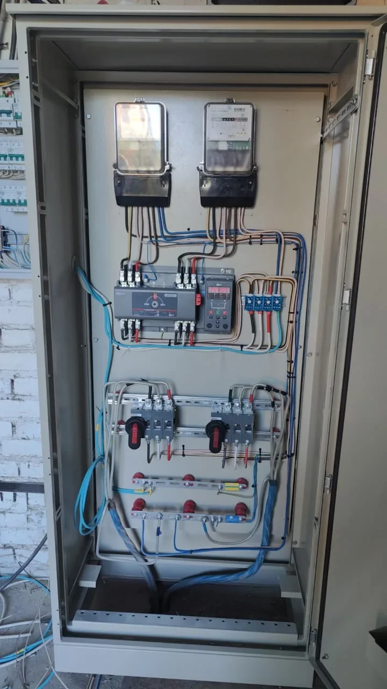
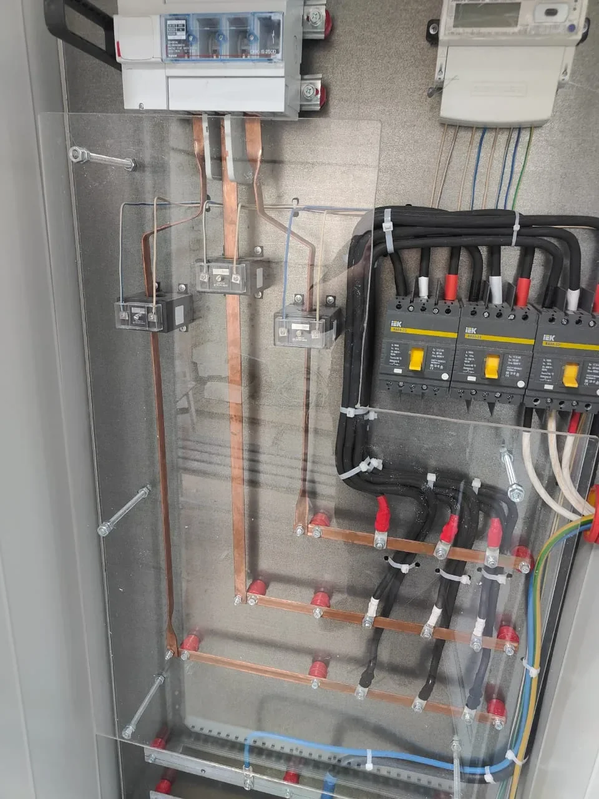
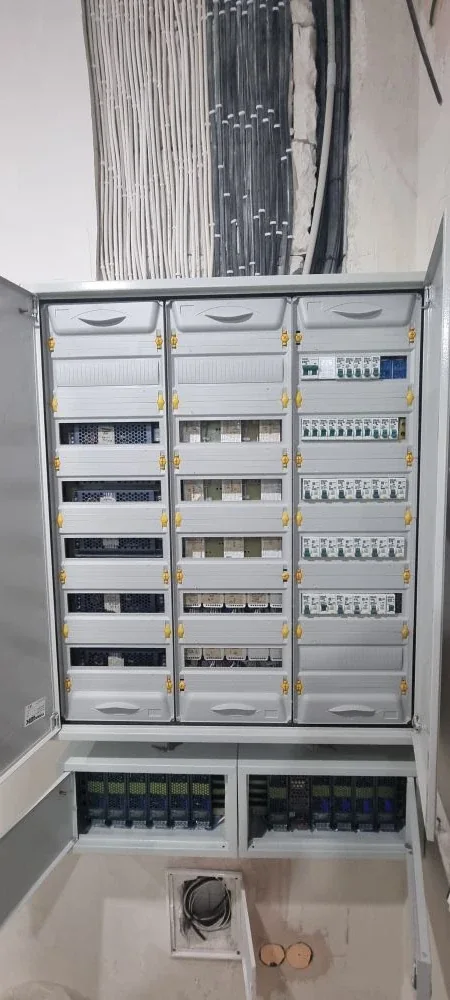

Коттеджи и частные дома
Ввод, распределение нагрузок, щит, освещение, розеточные группы, котельная, инженерное оборудование и резервное питание.
Электромонтаж коттеджа
Екатеринбург / Свердловская область / отправка по России
Работаем по Екатеринбургу и Свердловской области: разводка линий, щиты, освещение, силовые группы, подключение оборудования и подготовка объекта к включению. ВРУ, АВР, ЩУ и распределительные щиты собираем сами - это усиливает контроль над всей системой.
Почему к нам обращаются
Берем задачи, где важны схема, аккуратные трассы, правильное распределение нагрузок, понятный щит и дальнейшее обслуживание. Работаем по проекту или помогаем уточнить решение, если исходных данных пока мало.
По электромонтажу выезжаем на объекты в Екатеринбурге и Свердловской области. Щитовая сборка остается нашей сильной стороной: ВРУ, АВР, ЩУ и распределительные щиты собираем для своих объектов и отдельно по проекту.
Что делаем
Ввод, распределение нагрузок, щит, освещение, розеточные группы, котельная, инженерное оборудование и резервное питание.
Электромонтаж коттеджаЭлектрика при ремонте: квартирный щит, линии под технику, освещение, розетки, слаботочные трассы и подготовка к чистовой отделке.
Электромонтаж квартирыСиловые линии, лотки, освещение, подключение оборудования, распределительные щиты и структура для обслуживания.
Электромонтаж производстваОфисы, магазины, склады и помещения под арендатора: трассы, щиты, освещение, розетки и оборудование.
Электромонтаж объектовСборка вводных, резервных и управляющих щитов для объектов, где нужна понятная силовая часть и автоматика.
ВРУ, АВР и ЩУКвартирные, силовые и распределительные щиты собираем под схему объекта или отдельно с отправкой транспортной компанией.
Сборка электрощитовБыстрый старт
Большая часть заявок начинается с фото, схемы или короткого описания. Наша задача на первом шаге - понять объем, подсказать недостающие данные и дать реалистичный следующий шаг по стоимости и срокам.
Получить предварительный расчетПрисылайте файл, номиналы, перечень нагрузок и требования по оборудованию. Так быстрее всего оценить щит или монтаж.
Можно начать с фото текущего щита, места установки, помещения и описания, что должно работать после монтажа.
Разделим расчет на оборудование, сборку, монтаж, кабельные трассы и дополнительные работы, чтобы было понятно, из чего складывается сумма.
Отделим монтаж, щитовую сборку, кабельные трассы, оборудование и дополнительные работы, чтобы было понятно, за что отвечает смета.
Электромонтаж под ключ
Нам интересны задачи, где нужно продумать схему, собрать щит, развести линии и довести объект до рабочего состояния. Мелкие разовые работы уровня “поставить две розетки” не берем.
Черновой и чистовой электромонтаж, квартирный щит, группы освещения, розеточные линии, техника и слаботочные трассы по согласованной схеме.
Ввод, распределение нагрузок, щиты, кабельные линии, освещение, розеточные группы и подготовка инженерных систем к подключению.
Офисы, магазины, склады, помещения под арендатора: щиты, трассы, освещение, розетки, оборудование и подготовка к эксплуатации.
Силовые линии, распределительные щиты, подключение оборудования, кабельные трассы и аккуратная структура для дальнейшего обслуживания.
Как работаем
Качество монтажа
Маркируем линии и аппараты, соблюдаем порядок в укладке проводников, оставляем доступ к обслуживанию и не экономим на критичных элементах.
Можем работать с оборудованием IEK, EKF, Schneider Electric, ABB, DKC, КЭАЗ и другими брендами по проекту или бюджету.
Реальные работы
На фото - реальные объекты, кабельные линии и собранные щиты. Для заказчика это важнее красивых обещаний: видно, как устроены трассы, автоматика, ВРУ, распределение нагрузки и монтаж линий.





Примеры задач
Для расчета обычно достаточно схемы, фото объекта или описания нагрузки. Ниже - типовые примеры работ, которые помогают понять формат сотрудничества.
Производственный объект
Коттедж / коммерция
Электромонтаж
Кому подходим
Напишите тип объекта, город, что нужно сделать, есть ли проект или фото. Если данных мало, мы не пропадем, а скажем, что именно нужно уточнить.
Перейти к заявкеЧто прислать для расчета
Контроль перед выдачей
Частые вопросы
Коттеджи и частные дома, квартиры под ключ при ремонте, коммерческие и производственные помещения. Щиты собираем как часть объекта или отдельно по проекту.
Да, по объектам работаем в Екатеринбурге и Свердловской области: квартиры под ключ, частные дома, коммерческие и производственные помещения, кабельные линии, лотки, подключение щитов и подготовка к включению.
Точечные мелкие заказы вроде установки одной-двух розеток обычно не берем. Основной формат - электромонтаж под ключ или понятный объем работ на объекте.
Подойдут проект, однолинейная схема, список нагрузок, фото текущего щита или места монтажа. Если документов нет, начнем с описания задачи и короткого звонка.
Да. Можем собрать по брендам из проекта или предложить варианты по бюджету, срокам поставки и требованиям объекта.
Полезные материалы
Пишем не абстрактные материалы, а ответы на вопросы перед заказом: сколько стоит электромонтаж, что входит в работы, какие данные нужны для расчета и как выбрать подрядчика.
Что предусмотреть до запуска: касса, витрины, свет, розетки, щит и оборудование.
Читать статьюЧто предусмотреть перед заездом арендатора: щит, освещение, линии и оборудование.
Читать статьюКакие линии, защиту, щит и резервное питание предусмотреть до монтажа.
Читать статьюЧто нужно прислать для дистанционной сборки щита, фотоотчета и доставки.
Читать статьюЧто входит в работы, как учесть рабочие места, серверную зону, освещение и щит.
Читать статьюЧто проверить до начала работ и какие вопросы задать подрядчику.
Читать статьюЛогика линий, щит, маркировка, проверка и удобство обслуживания.
Читать статьюКоротко: стоимость, состав работ, данные для расчета и формат заявок.
Читать ответыЧто влияет на цену: точки, щит, техника, стадия ремонта и вводные для сметы.
Читать статьюКакие планы, фото, нагрузки и сроки прислать, чтобы быстрее получить оценку.
Читать статьюОфисы, магазины, сервисные зоны: щит, линии, освещение, оборудование и данные для сметы.
Читать статьюПлощадь, ввод, щит, котельная, инженерия, резервное питание и состав работ.
Читать статьюВвод, щит, кабельные линии, освещение, розетки, котельная и заземление.
Читать статьюПланирование линий, черновой монтаж, квартирный щит, чистовой этап и проверка.
Читать статьюМатериалы про коттеджи, квартиры, производство, коммерческие объекты, щиты и выбор подрядчика.
Все статьиЗаявка
Лучше всего приложить план, проект, фото объекта, список нагрузок или фото текущего щита. Если документов нет, начнем с короткого звонка. Работаем по Екатеринбургу и Свердловской области, щиты можем собирать отдельно и отправлять транспортной компанией.